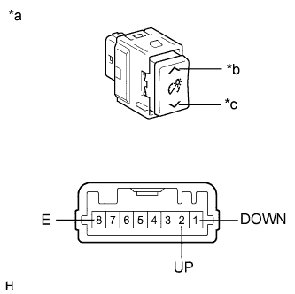

METER / GAUGE SYSTEM > Operating Light Control Rheostat does not Change Light Brightness |
| 1.SYSTEM CHECK |
Confirm the symptoms.
| Result | Proceed to |
| Meter illumination does not change when operating light control switch | A |
| Dimmer function cannot be canceled | B |
|
| ||||
| A | |
| 2.READ VALUE USING INTELLIGENT TESTER (LIGHT CONTROL UP SW, LIGHT CONTROL DOWN SW) |
Connect the intelligent tester to the DLC3.
Turn the engine switch on (IG).
Turn the intelligent tester on.
Enter the following menus: Body Electrical / Combination Meter / Data List.
Check the values by referring to the table below.
| Tester Display | Measurement Item/Range | Normal Condition | Diagnostic Note |
| Light Control Up SW | Light control rheostat up switch/OFF or ON | OFF: Light control rheostat up switch not pressed | - |
| ON: Light control rheostat up switch pressed | |||
| Light Control Down SW | Light control rheostat down switch/ OFF or ON | OFF: Light control rheostat down switch not pressed | - |
| ON: Light control rheostat down switch pressed |
|
| ||||
| OK | ||
| ||
| 3.INSPECT LIGHT CONTROL RHEOSTAT |
|  |
Remove the light control rheostat (Click here).
Measure the resistance according to the value(s) in the table below.
| Tester Connection | Switch Condition | Specified Condition |
| 2 (UP) - 8 (E) | Light control rheostat up switch pressed | Below 1 Ω |
| Light control rheostat up switch not pressed | 10 kΩ or higher | |
| 1 (DOWN) - 8 (E) | Light control rheostat down switch pressed | Below 1 Ω |
| Light control rheostat down switch not pressed | 10 kΩ or higher |
| *a | Component without harness connected (Light Control Rheostat) |
| *b | Light control rheostat up switch |
| *c | Light control rheostat down switch |
|
| ||||
| OK | |
| 4.CHECK HARNESS AND CONNECTOR (COMBINATION METER ASSEMBLY - LIGHT CONTROL RHEOSTAT) |
Disconnect the G3 meter connector.
Disconnect the G8 light control rheostat connector.
Measure the resistance according to the value(s) in the table below.
| Tester Connection | Condition | Specified Condition |
| G3-6 (RHUP) - G8-2 (UP) | Always | Below 1 Ω |
| G3-6 (RHUP) - Body ground | Always | 10 kΩ or higher |
| G3-7 (RHDW) - G8-1 (DOWN) | Always | Below 1 Ω |
| G3-7 (RHDW) - Body ground | Always | 10 kΩ or higher |
| G8-8 (E) - Body ground | Always | Below 1 Ω |
|
| ||||
| OK | ||
| ||
| 5.INSPECT LIGHT CONTROL RHEOSTAT |
Remove the light control rheostat (Click here).
Measure the resistance according to the value(s) in the table below.
| Tester Connection | Switch Condition | Specified Condition |
| 2 (UP) - 8 (E) | Light control rheostat up switch pressed | Below 1 Ω |
| Light control rheostat up switch not pressed | 10 kΩ or higher |
| *a | Component without harness connected (Light Control Rheostat) |
| *b | Light control rheostat up switch |
| *c | Light control rheostat down switch |
|
| ||||
| OK | |
| 6.CHECK HARNESS AND CONNECTOR (COMBINATION METER - LIGHT CONTROL RHEOSTAT) |
Disconnect the G3 meter connector.
Disconnect the G8 light control rheostat connector.
Measure the resistance according to the value(s) in the table below.
| Tester Connection | Condition | Specified Condition |
| G3-6 (RHUP) - G8-2 (UP) | Always | Below 1 Ω |
| G3-6 (RHUP) - Body ground | Always | 10 kΩ or higher |
|
| ||||
| OK | ||
| ||